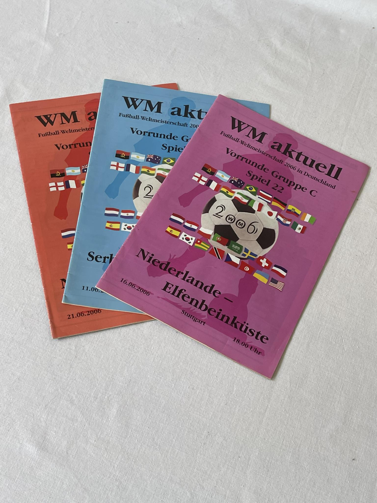

Top World Cup Collection
Index
Contact
Index
Close
Years
1924
1928
1930
1934
1938
1950
1954
1958
1962
1966
1970
1974
1978
1982
1986
1990
1994
1998
2002
2006
2010
2014
2018
2022
2026
Rooms
Autographs / pictures
Information boards
FIFA official items
Sports equipment
Divers
Pieces
Jules Rimet Cup of Pedro Petrone
Goldpin FIFA 1904
Top Scorer Medal SANDOR KOCSIS
Contact
Collection
World Cup 2006 Germany

2002
2010